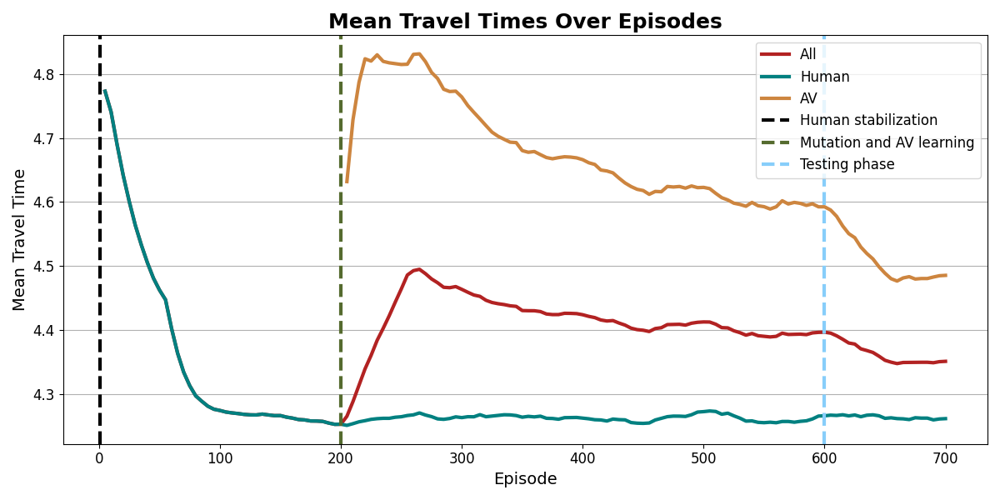
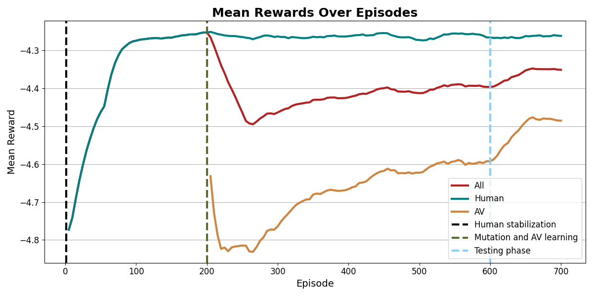

Experiment ID: ucb_ingolstadt_custom_config1
The core algorithm is an independent Tabular Q-Learning model utilizing the Upper Confidence Bound (UCB) action-selection strategy for Multi-Armed Bandits. The foundational logic for this implementation was ported directly from the legacy research scripts located in:
AVs_marginal_cost/saint_arnoult_network/ucb_saint_arnoult.pyAVs_marginal_cost/two_route_net/ucb.pyUnlike standard epsilon-greedy exploration, the UCB algorithm treats the routing choice as a Contextual Multi-Armed Bandit problem. It balances exploitation (choosing historically fast routes) with exploration (testing rarely used routes) by mathematically calculating an upper confidence bound for each route option. It operates as follows:
previous_agents_plus_start_time) is discretized into bins so the agent can look up discrete states in a Q-Table.Q(s, a) + β * √(2 * ln(N(s)) / N(s, a))Q(s, a) is the estimated reward, N(s) is the total visits to the state, N(s, a) is the visits to that specific state-action pair, and β (Beta) controls the exploration magnitude.
α):Q(s,a) ← (1 - α) * Q(s,a) + α * Reward
-travel_time). Crucially, this implementation utilizes independent learners, meaning each CAV optimizes its own route selfishly without shared fleet memory.Extracted from exp_config.json:
| Parameter | Value |
|---|---|
| Learning Rate (Alpha) | 0.1 |
| Exploration Factor (Beta) | 3.0 |
| Total Agents | 1035 |
| Machine Ratio | 0.4 (414 CAVs) |
| Human Learning Episodes | 200 |
| Training Episodes | 400 |
| Testing Episodes | 100 |
| Environment Seed | 42 |
| Observation Space | previous_agents_plus_start_time |
Extracted from metrics/BenchmarkMetrics.csv:
| Metric | Value (seconds) | Description |
|---|---|---|
t_pre | 4.196 | Baseline human traffic travel time before AV intervention. |
t_test | 4.295 | Overall average fleet travel time during the testing phase. |
t_train | 4.369 | Overall average fleet travel time during the training phase. |
t_CAV | 4.427 | Average travel time of specifically the Autonomous Vehicles (CAVs) in the testing phase. |
t_HDV_test | 4.207 | Average travel time of the remaining Human-Driven Vehicles (HDVs) in the testing phase. |

